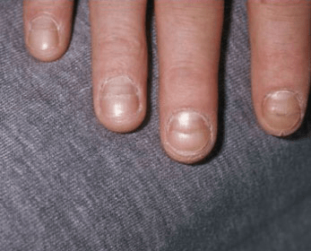
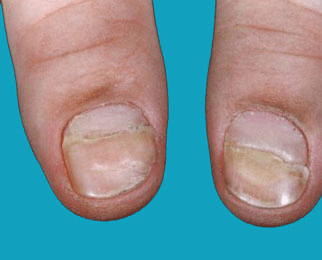

Vertical ridges are furrows that run from the tip of your fingernail down to
the cuticle. They are sometimes called longitudinal striations or bands.
Slight vertical ridges in fingernails often develop in older adults, possibly
due to a slowing of cell turnover. This is when new skin cells produced below
the surface of your skin rise up to take the place of dead cells that are discarded
from the surface.
If you experience other symptoms like color or texture changes in your nails, it
may be caused by a medical condition. In trachyonychia, or 20-nail dystrophy, the
ridges may be accompanied by a change in color to your nails, or your nails may
become rough or brittle.
Iron deficiency anemia can also trigger vertical ridges and changes to your nails
that make them concave, or spoon-shaped.
Deep horizontal ridges, called Beau’s lines, are often symptoms of a serious condition. They may actually stop nail growth until the underlying condition is treated. Acute kidney disease may also be present if Beau’s lines appear. In addition, when Beau’s lines develop on all 20 nails, it could be a symptom of:
